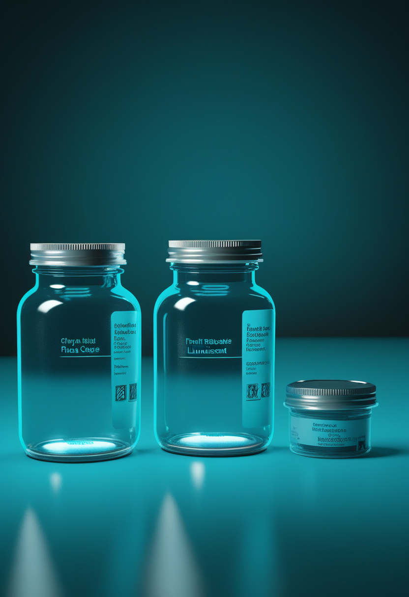
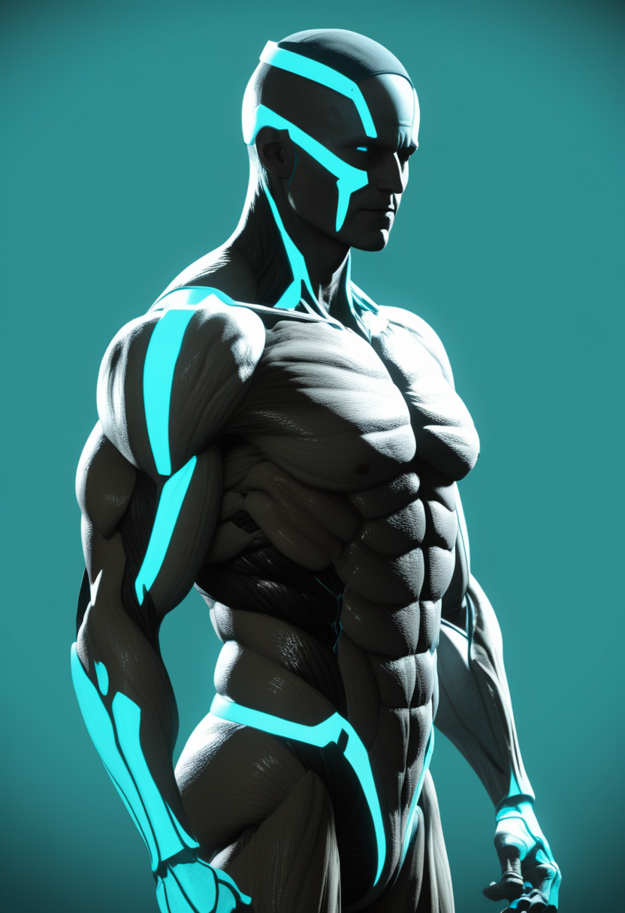
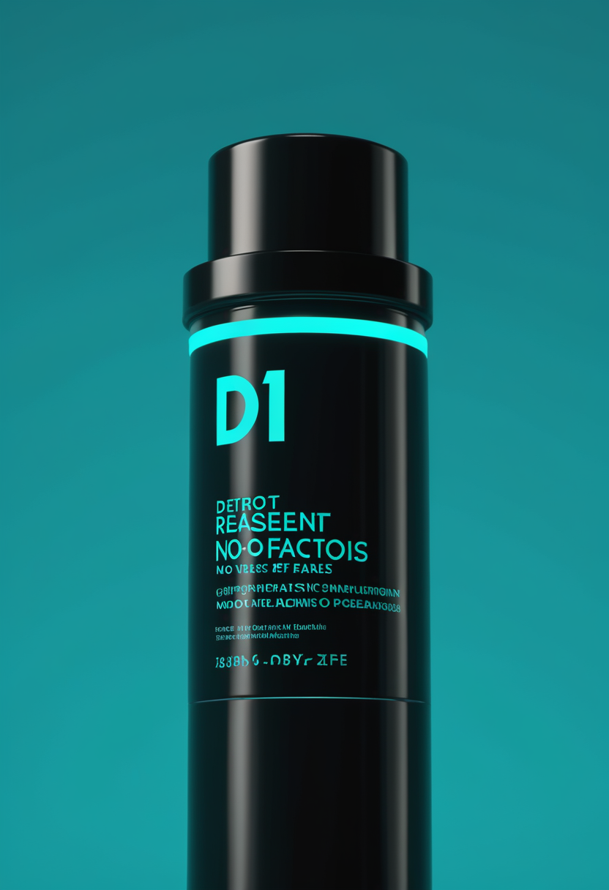

木曜日の便り。DRC(コンゴ民主共和国)のブンディブギョ型エボラは、イトゥリ州2,901例・北キブ州314例などを含めDRC全体で確定3,262例・死者1,437人(7/27時点)に達し、WHOは感染拡大の継続を認めつつ初めて「安定化の兆し」に言及した。震源地から飛び火した大都市キサンガニでは輸入5例にとどまり、二次感染はゼロを維持している。それでも命の現場では、Biogenの核酸医薬salanersenがFDA画期的治療薬指定を獲得し、NMD Pharmaは治験投与を完了する一方、Roche/Genentechは筋標的薬emugrobartの開発中止を発表した。自由の分野では、Neuralinkが電極糸の技術課題克服を進め、Precision Neuroscienceは非侵襲アレイの臨床試験を100人規模へ拡大している。畏敬の宇宙では、Webb望遠鏡がちりの円盤に隠れた巨大惑星を発見し、日本のはやぶさ2は小惑星「鳥船」への接近観測に成功、中国は嫦娥7号の打ち上げ準備を進めている。美の章では、脳のデジタルツインががん治療の個別化に応用される一方、意識のデジタル化を巡る「認知主権」論議も加速している。
7/29号の続報 ― DRC保健省はイトゥリ州で2,901例(死者1,207人、28/36保健区)、北キブ州で314例(死者204人、11/34保健区)などを含め、DRC全体で確定3,262例・死者1,437人(7/27時点)に達したと発表した。WHOは感染拡大が続いていることを認めつつ、初めて「安定化の兆し」に言及した。震源地から飛び火した大都市キサンガニでは、輸入例が5例にとどまり現時点で二次感染は確認されておらず、地域封じ込めの成否が今後の焦点となる。

Biogenの核酸医薬salanersen(BIIB115)が6月4日、FDAより画期的治療薬指定を取得した。遺伝子治療後も症状が残る小児での運動機能改善などの第1b相データが根拠とされ、乳児・小児・成人を対象とする3つの第3相試験(STELLAR-1、SOLAR、STELLAR-2)が進行中。
NMD Pharmaのignaseclant(NMD670)を用いたPhase2試験「SYNAPSE-SMA」で、米欧の52人のSMA3型成人患者全員の投与が完了した。データは2026年夏の後半にコミュニティへ共有される予定。

Roche/Genentechは3月23日、抗ミオスタチン抗体emugrobart(GYM329)についてSMAおよびFSHD向けのPhase3開発を中止すると発表した。Phase2/3試験「MANATEE」のPart1でリスジプラム単剤と比較して一貫した機能改善が確認できなかったことが理由で、安全性は良好だった。
salanersenの画期的治療薬指定やNMD Pharmaの治験完了など前進が続く一方、emugrobartのPhase3中止は筋標的薬アプローチの難しさも示しており、SMA治療パイプラインは明暗が併存する局面にある。
2人目の被験者Alexでは、手術中に脳の動きを抑え埋込部と脳表面の隙間を減らす対策を講じた結果、電極糸の後退が確認されなかった。この対策導入後、続く被験者20人中18人で信号品質の改善がみられたと報じられている。
Precision Neuroscienceの超薄型皮質電極アレイ「Layer 7」(脳への埋め込み不要・除去可能)は、FDA 510(k)クリアランスのもと18の医学センターで約100人の参加者を対象に臨床試験が進行中。参加者は脳活動だけで画面上の対象を操作できたと報告している。

2026年時点で商用承認済みのBCIは存在せず、現行の埋込みはすべて研究プロトコルまたは早期アクセスプログラムの下で行われている。専門家による現実的な商用化の時間軸は2028〜2030年とされる。
侵襲型(Neuralink)は技術的課題の克服が進み、非侵襲型(Precision Neuroscience)は臨床試験の規模を拡大 ― 異なる経路が同時に実用化へ近づく一方、業界全体としての商用化にはなお2〜4年を要するとの冷静な評価も併存する。
DRC保健省はイトゥリ州で2,901例(死者1,207人、28/36保健区)、北キブ州で314例(死者204人、11/34保健区)などを含め、DRC全体で確定3,262例・死者1,437人(7/27時点)に達したと発表した。WHOは感染拡大の継続を認めつつ初めて「安定化の兆し」に言及。震源地から飛び火した大都市キサンガニでは輸入5例にとどまり、二次感染は確認されていない。
客船M/V Hondius由来のアンデス・ハンタウイルス感染は、7月2日時点で13例(死者3人)に達し、WHOはこの件で5報目のDisease Outbreak Newsを発出した。複数国にまたがる集団感染として監視が続く。
DRCエボラは記録的規模のまま「安定化の兆し」が初めて語られる転換点を迎え、キサンガニでの封じ込めは成功している一方、客船由来のハンタウイルス集団感染は国境を越えた監視を要する局面が続く。
ベータ・ピクトリス系を観測していたJames Webb宇宙望遠鏡が、ちりの円盤に隠れていた新たな巨大惑星「ベータ・ピクトリスd」を発見した。直接の光ではなく、一酸化炭素・水蒸気・メタンという大気の化学的特徴から存在が確認された、新手法による発見として注目される。
JAXAの小惑星探査機「はやぶさ2」拡張ミッションは7月5日18時30分(日本時間)、秒速約5kmという高速で小惑星「鳥船」(Torifune、直径約450m)へのフライバイを実施し、二つの塊が連なる細長い形状を高解像度で撮影した。りゅうぐうのサンプルを地球へ届けた後、探査機は2031年の1998 KY26到達を目指し航行を続けている。
中国のLijian-1 Y15商業ロケットが7月24日、衛星5基(AI大規模モデル搭載機を含む)を予定軌道に投入した。月南極探査機「嫦娥7号」は長征5号ロケットとともに文昌航天発射場での最終準備が進み、8月後半の打ち上げが見込まれている。
Webb望遠鏡は大気の化学的特徴という新手法で隠れた惑星を見出し、日本のはやぶさ2は極小天体への高速フライバイを成功させ、中国は商業打上げと月探査を並行して進める ― スケールの異なる三つの前線が同時に動いている。
AIを活用した脳のデジタルツイン技術が、脳腫瘍の代謝を予測し個別化治療を可能にする手法として報じられた。腫瘍の代謝動態をシミュレーションすることで、患者ごとの治療選択の精度向上が期待されている。
3月に発表されたショウジョウバエの脳マッピング・仮想シミュレーション実験(Eon Systems社)を受け、意識のデジタル化がもたらす便益とリスク、統治のあり方を問う「認知主権」の議論がシンクタンクで展開されている。
脳のデジタルツインは臨床応用(がん治療の個別化)で着実に前進しており、同時に意識のデジタル化を見据えたガバナンス論議も前倒しで進んでいる。
2026年7月30日、DRCのエボラはWHOが初めて安定化の兆しに言及するなど拡大にひとまず歯止めの気配が見え始め、飛び火先の大都市キサンガニでは二次感染ゼロを維持している。命の現場では、Biogenの核酸医薬salanersenがFDA画期的治療薬指定を獲得し、NMD Pharmaは治験投与を完了する一方、Roche/Genentechは筋標的薬emugrobartの開発中止を発表した。自由の分野では、Neuralinkが電極糸の技術課題克服を進め、Precision Neuroscienceは非侵襲アレイの臨床試験を100人規模へ拡大している。畏敬の宇宙では、Webb望遠鏡がちりの円盤に隠れた巨大惑星を発見し、日本のはやぶさ2は小惑星「鳥船」への高速フライバイに成功、中国は商業打上げと嫦娥7号の準備を並行して進めた。そして美の章では、脳のデジタルツインががん治療の個別化に応用される一方、意識のデジタル化を巡る「認知主権」の議論が加速している。
では、また明日の朝に。 — JaH